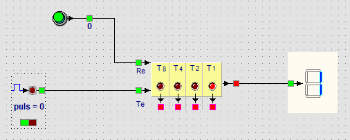

Leerpad › Les 8 van 12
Tellen
Doel: pulsen tellen met een teller, de stand tonen op een display,
en binair tellen begrijpen.
▶ Open dit voorbeeld

De impulsgenerator laat de teller lopen; het display toont de stand.
Zo werkt het
- De impulsgenerator geeft om de 0,3 seconde een puls op de telingang
Te van de teller.
- De drukknop op Re zet de teller terug op 0.
- De rode uitgang rechts gaat naar het 7-segmentdisplay: dat toont de
stand als cijfer, en na 9 als A tot F.
Binair tellen
Onder de teller staan vier lampjes: 8, 4, 2 en 1. Tel de getallen op van de
lampjes die branden, en je hebt de stand:
| 8 | 4 | 2 | 1 | Stand | Display |
|---|
| 0 | 0 | 1 | 1 | 2 + 1 = 3 | 3 |
| 0 | 1 | 1 | 0 | 4 + 2 = 6 | 6 |
| 1 | 0 | 1 | 0 | 8 + 2 = 10 | A |
| 1 | 1 | 1 | 1 | 15 | F |
Na 15 begint de teller opnieuw bij 0.
Probeer het
- Start de simulatie en klik op de knop onderaan de impulsgenerator: de teller begint te lopen.
- Klik nog eens om te stoppen, en controleer de stand met de lampjes 8-4-2-1.
- Druk op de drukknop: de teller staat weer op 0.
Opdracht
Vervang de impulsgenerator door een drukknop, zodat je zelf de pulsen geeft. Hoeveel keer moet je drukken
om C op het display te krijgen?
Oplossing
C is 12 (A = 10, B = 11, C = 12): twaalf keer drukken. Binair is dat 8 + 4, dus de lampjes 8 en 4 branden.